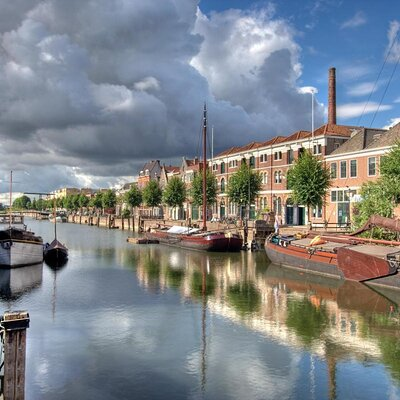

Info
| Demografia |
Population |
1 178 811 |
| Population Density |
2 961 hab./km² |
| Geograph |
Area |
1.473 km² |
| Region |
Rotterdam |
| Country |
Netherlands |
| Website |
https://www.rotterdam.nl/en |
- Architectural Innovation: After World War II, Rotterdam was heavily bombed, leading to a rebuilding effort that embraced modern architecture. The city is known for its striking and innovative buildings, including the Cube Houses (Kubuswoningen) and the Markthal, a massive indoor market with a colorful ceiling mural.
- Largest Port in Europe: Rotterdam is home to one of the largest and busiest ports in the world, often referred to as the "Gateway to Europe." The port plays a crucial role in global trade and logistics.
- Vibrant Cultural Scene: Rotterdam boasts a rich cultural scene with numerous museums, galleries, and theaters. The Kunsthal and the Boijmans Van Beuningen Museum are two prominent art institutions in the city.
- Green Spaces: Despite its modernity, Rotterdam places a strong emphasis on green spaces and sustainability. The city features several parks and green areas, such as the Kralingse Bos and the Het Park, providing residents and visitors with plenty of opportunities for outdoor activities.
- Rotterdam’s Floating Pavilion: The city is known for its unique Floating Pavilion, an innovative structure designed to float on water. It serves as a venue for exhibitions, conferences, and events, showcasing Rotterdam's commitment to sustainable and creative architecture.